Helping brands see where competitors already advertise
With the data we already had, I designed an experience that makes competitor activity easier to explore: a map for where, analytics for what patterns.
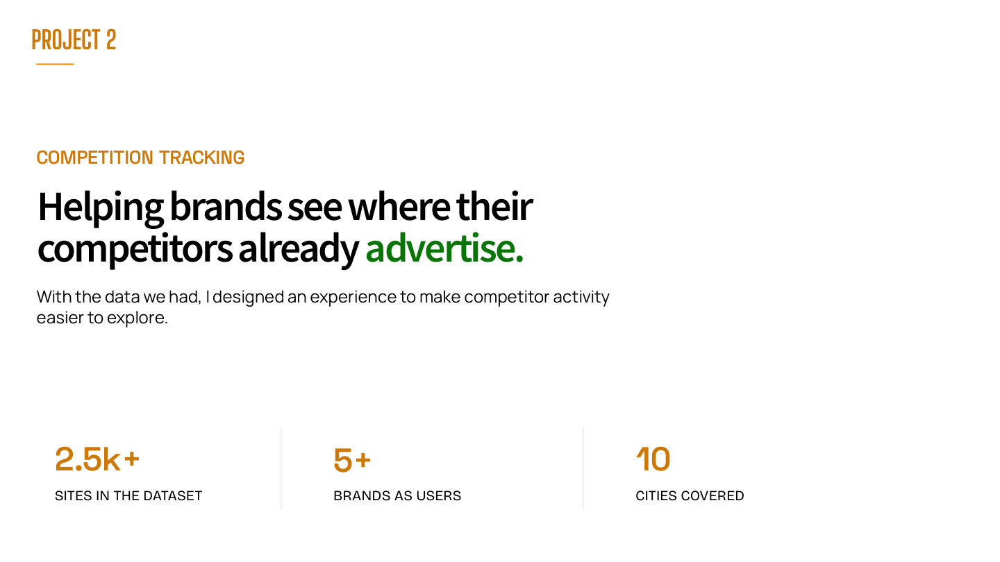
We already had the data. We saw a product in it.
Brands and agencies plan OOH campaigns in new cities. Before they start they want to know which competitors are already advertising there, but that information is scattered across vendors.
Sites in the dataset
Brands as users
Cities covered
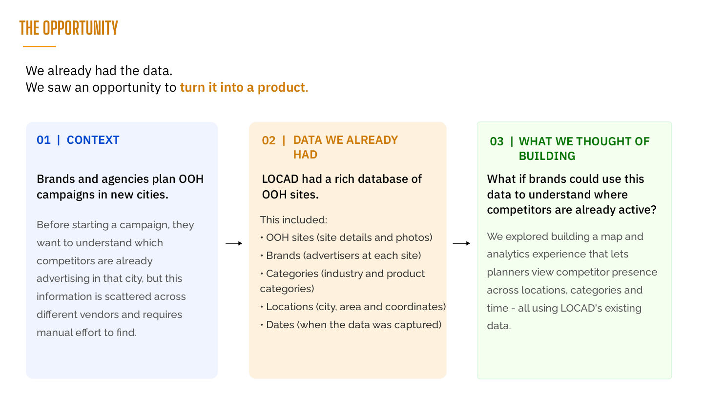
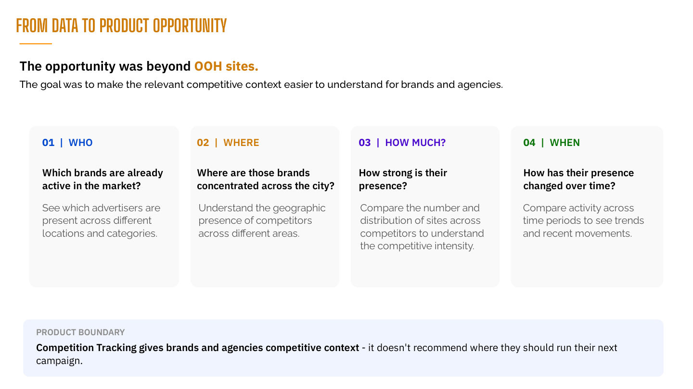
Exploring directions, then choosing one
I mapped possible product directions and discussed them with clients. Competition Tracking won on client need, existing data, a clear focus and room to grow.
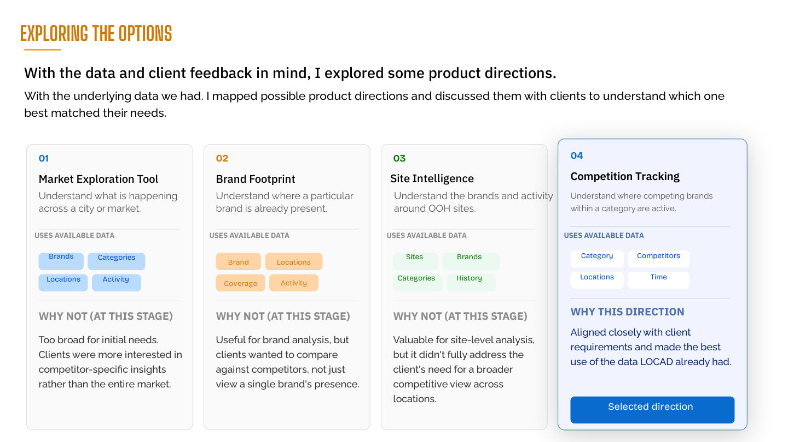
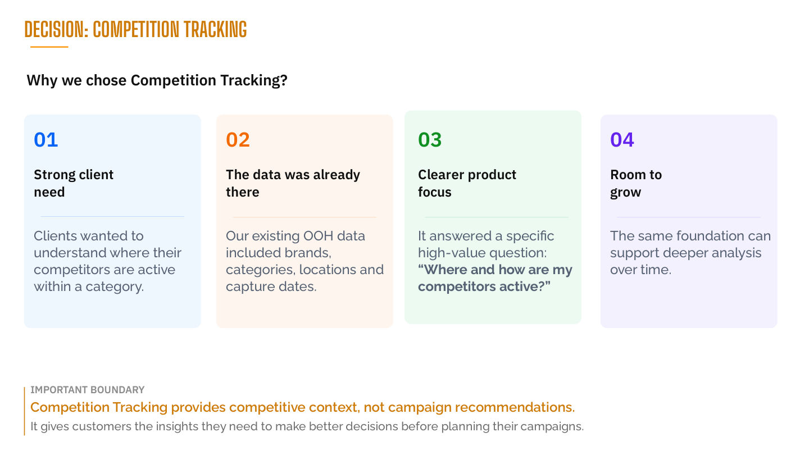
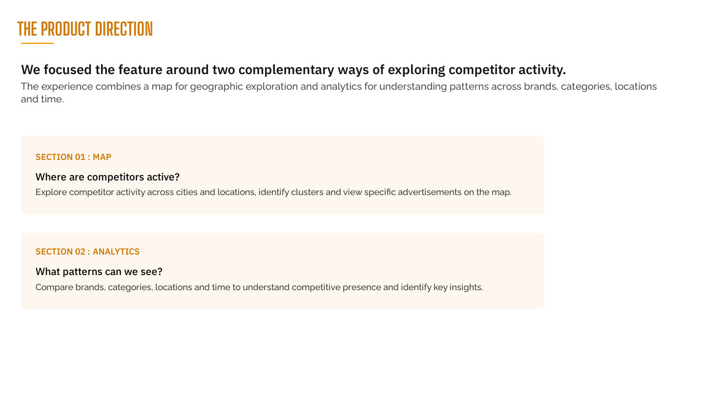
Map for where, analytics for what patterns
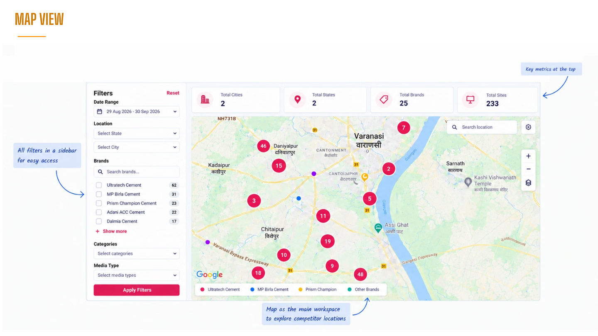
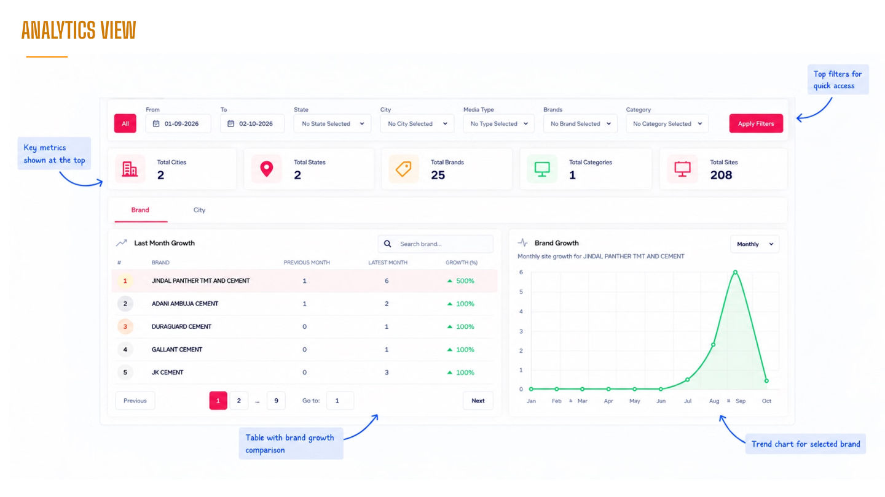
Filters were in the way, and two views weren't enough
User testing with Dalmia Cements.
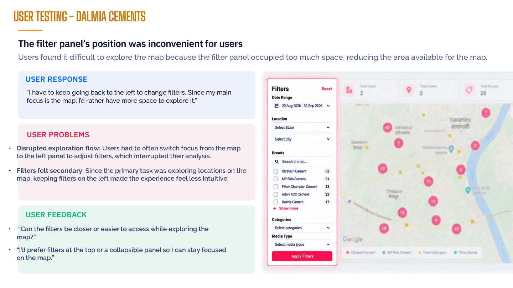
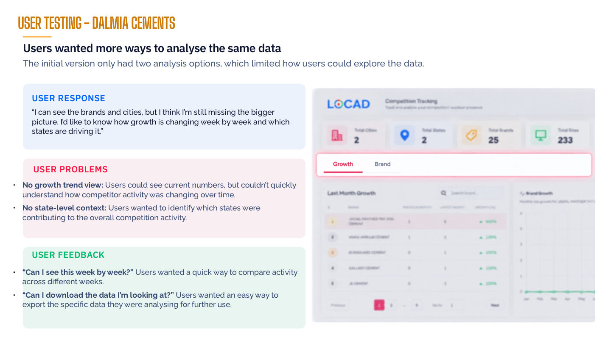
We iterated on the feedback
Filters moved to the top, the map got more space, clusters and brand identification became clearer, and the information hierarchy was simplified.
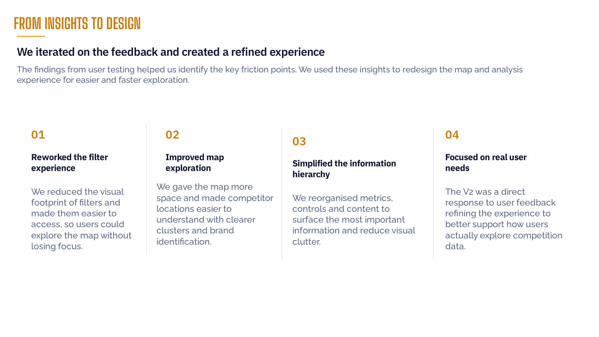
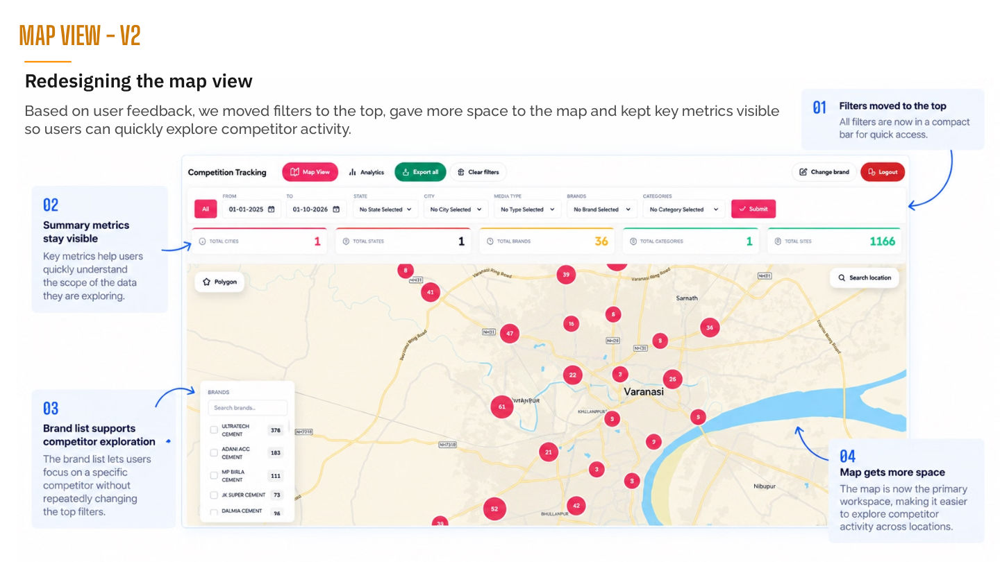
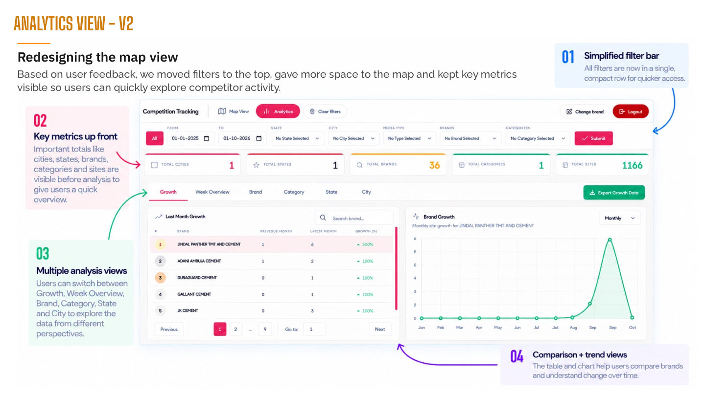
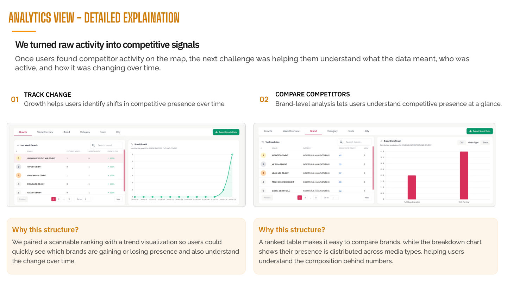
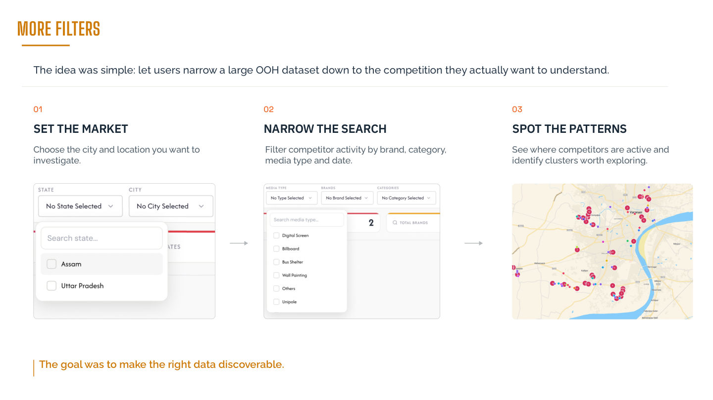
Adopted by client brands
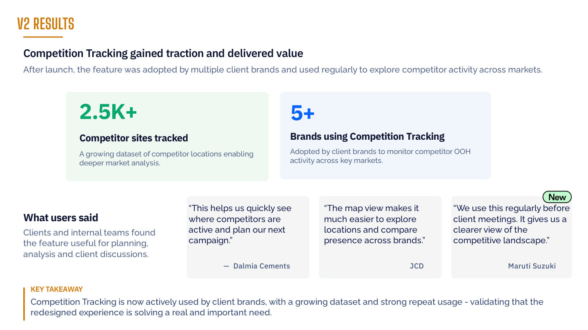
Showing the data wasn't enough
I had to make it easier for users to find what actually mattered to them.
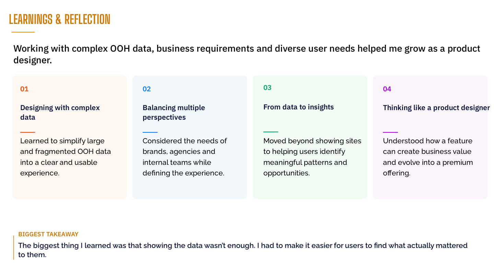